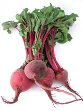
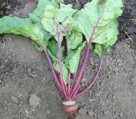

HORT 281 :: Lecture 30 :: ORIGIN, AREA, PRODUCTION, VARIETIES, PACKAGE OF PRACTICES FOR BEET ROOT

Origin, area, production, varieties, package of practices for BEET ROOT
(Syn: Garden beet) (Beta vulgaris L.) (2n = 2x = 18)
(Hindi : Chukandar) Family : Chenopodiaceae
Beet root is a popular root crop grown for its fleshy roots which are used as cooked vegetable, salad and for pickling and canning. Young plants along with tender leaves are also used as pot herbs. It is very popular in USA. Beet root is a rich source of protein (1.7 g/100 g/100 g), carbohydrates (88 mg), calcium (200 mg), phosphorus (55 mg) and vitamin C (88 mg). Leaves are rich in iron (3.1 mg), vitamin A (2100 I.U.), thiamine (110 μ g) and ascorbic acid (50 mg/ 100 g).
Origin
Beet root originated from Beta vulgaris L. ssp. maritima by hybridization with B. patula. Crop has site of origin probably in Europe. Earlier types were with long roots like that of carrot. Beet root, sugar beet and palak belong to species B. vulgaris and are cross compatible.
Botany
Beet root is a biennial, producing a fleshy elongated hypocotyls and a rosette of leaves in first year and flowers in second year. Upper portion of fleshy root develops from hypocotyls and basal part from tap root. Concentric rings seen in cross section of root are as a result of alternate formation of vascular tissues and storage parenchyma tissues. Root skin colour varies from orange red to dark purple red. Colour of beet root is due to presence of red violet pigments of β cyanins and a yellow pigment, β xanthin. It has extensive tap root system and tap root grows as deep as 3m.
 Rosette leaves develop in a close spiral, with older ones on outside. Inflorescence which normally develops in second year is a spike and ears numerous sessile flowers in clusters of 3-4. Flowers are bisexual, small, inconspicuous without corolla, but with green calyx. It produces abundant pollen and is wind pollinated. All breeding, works are to be conducted under pollen proof conditions using filtered air.
Fruits are mostly aggregates formed by cohesion of 2 or more fruits and held together by swollen perianth (calyx) base forming an irregular dry cork like body called as ‘seed ball’ or the so called seed. If there is a single flower, a single germ seed alone will develop in the seed’. True seeds are small, kidney shaped and brown. Attempts to breed varieties with monogerm seeds are in progress since thinning is a costly and essential operation in beet root cultivation.
Varieties
A few of the improved varieties popular in India are:
Detroit Dark Red: Roots perfectly round with smooth uniform deep red skin; flesh dark blood red with light red zoning; heavy yielder with a duration of 80-100 days.
Crimson Globe: It produces round to flat round roots. Outer skin is medium red and flesh is crimson red without zonations; duration 55-60 days.
Early Wonder: Roots flat globular with dark red skin and dark red flesh and light red zoning.
Ooty-1:This TNAU variety has round roots with blood red flesh colour; yields 28 t/ha in 120 days; it sets seeds under Nilgiris conditions.
Crosby Egyptian:Roots flat globe with dark purplish red flesh; duration 55-60 days; produces white zoning under warm weather.
Madhur, Ruby Queen and Ruby Red are a few of the varieties marketed by private seed industry.
Climate
Beet root is hardy to low temperature and prefers cool climate. Though it grows in warm weather, development of colour, texture, sugar content etc. of roots is the best under cool weather. High temperature causes zoning i.e., appearance of alternate light and dark red concentric rings in the root. Extreme low temperature of 4.5-10.0oC for 15 days will results in bolting. It requires abundant sunshine for development of storage roots.
Soil
Deep well drained loam or sandy loams is the best for beet root cultivation. Heavy clayey soils result in poor germination and stand of crop due to formation of a soil crust after rains or irrigation. Roots may be misshaped and will not develop properly in heavy soils. Beet root is highly sensitive to soil acidity and the ideal pH is 6-7. Beet root is one of a few vegetables which can be successfully grown in saline soils.
Land preparation and sowing
Being a cool season crop, beet root is raised during winter in plains and as a spring-summer crop in hills by March-April. In plains, sowing is practiced during September-November.
Land is ploughed to a fine tilth by thorough ploughing making it loose and friable. Clods are to be removed completely. Apply well decomposed farmyard manure at the time of final ploughing. Flat beds or ridges and furrows are prepared. Water-soaked ‘seed balls’ which contain 2-6 seeds are drilled 2.5 cm deep in rows at spacing of 45-60 x 8-10 cm. 5-6 kg of seeds is required for one hectare. Staggered sowing at 1-2 weeks interval ensures steady supply of roots during the season.
Manures and fertilizers
On sandy soils, organic manure @ 25 t/ha is recommended. For an average soil, 60-70 kg N, 100-120 kg P and 60-70 kg K/ha is recommended. Entire farmyard manure, half of N and full P and K should be applied basal at the time of land preparation prior to sowing and remaining at 30-45 days after sowing. Nitrate sources of N are preferred to ammonium sources. Beets have a relatively high boron requirement and its deficiency causes internal breakdown as black rot or dry rot.
Aftercare
Thinning is an essential operation when more than one seedling germinates from each seed. Moist soil is essential for seed germination and for further growth. Usually 5-6 irrigations are usually given during summer and three irrigations during winter in North Indian plains.
Field is usually kept weed free by light hoeing at early stage of crop. Swollen roots are also to be covered with soil by earthing up.
Harvesting
Medium sized tubers are of great demand and tubers are harvested after attaining a diameter of 3-5 cm. Harvesting is done 8-10 weeks after sowing by pulling the top with hand. Later tops are removed, graded and marketed. In European countries, where small sized bunches are in demand, tubers are tied in bundles of 4-6 with their tops. Over matured and oversized tubers become woody and crack. Yield varies from 25 to 30t/ha and the tuber stores well at 0oC and 90% RH.
Seed production
Unlike other root crops, annual tropical types do not exist in beet root. All cultivars in beet root are temperate biennial types and seed production is possible in hills 1400 m above mean sea level. A low temperature of 4.4 to 7.7oC for 6-8 weeks is required for flowers to initiate. Usual method of seed production is root to seed method. In this method, seeds are sown in July and well developed roots are dug out during November-December. After selection of root tubers, top is trimmed without injuring crown. Then whole tubers of selected plants are transplanted at a spacing of 60 x 45-60 cm in well prepared fields and irrigated. Harvesting is done during June-July. Cross pollination is due to self incompatibility. Being a cross pollinated crop, that too wind pollinated, provide an isolation distance of 1000 m for certified seed production and 1600 m for breeder and nucleus seed production. Average seed yield is 2.0 t/ha.
Pests and diseases
Insect pests like leaf miners, web worms, semi loopers; fungal diseases like Cercospora leaf spot and downy mildew and viral diseases cause damage in beet root cultivation.
OTHER ROOT CROPS
Minor root crops which are under cultivation in specific areas of the country are rutabaga (Brassica napobrassica), parsnip (Pastinaca sativa), horse radish (Armoracia rusticana), salsify, chervil, celeriac etc.
*********
1. Family of beetroot is
a. Cruciferae b. Chenopodiaceae
c. Umbelliferae d. Clauciaceae
2. Colour of beetroot is due to
a. b cyanin & b xanthin b. b carotene & xanthophylls
c. Anthocyanium d. b carotene & b cyanin
3. Inflorescence of beetroot is
a. Raceme b. Panicle c. Cyme d. Spike
4. _______ is an essential operation in beetroot
a. Mulching b. Desuckuing c. Thinning d. Pinching
5. Storage temperature of beetroot is
a. 00 b. 50C c. 70C d. 150C
| Download this lecture as PDF here |